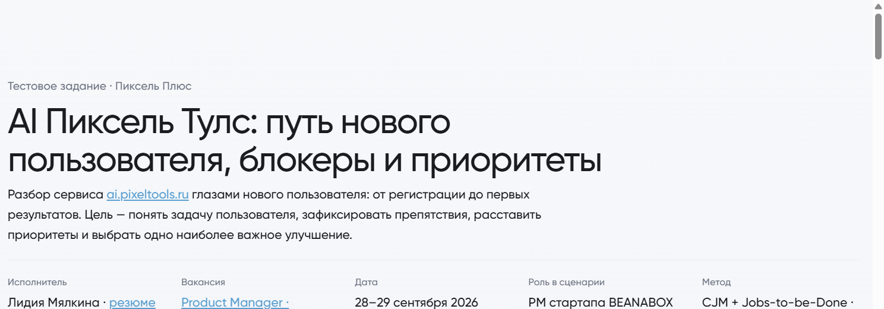

Тестовое · Пиксель Плюс
CJM, блокеры и ТЗ для AI Пиксель Тулс
Одно улучшение до Create: цепочка «промпты → автоконкуренты»
Проблема
На экране подобранных промптов новый пользователь не видит, что список запросов задаёт автоподбор конкурентов и основу аудита. Первая польза приходит «кривой» — цифры считаются вокруг чужого поля
Решение
За 2 дня собрала CJM пути до первой пользы, карту блокеров с приоритетами RICE, выбрала одно улучшение и оформила ТЗ плюс кликабельный прототип as-is / to-be на токенах UI Kit Пиксель Плюс
Результат
Готовый отчёт для бэклога: фокус — объяснить цепочку «промпты → автоконкуренты / аналитика» до «Создать проект» (RICE 12.2). Прототип с переключателем Сейчас / После
